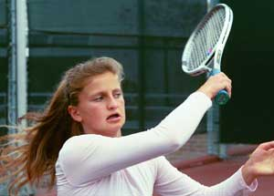

Previous: Situational and Scenario Analysis - Part 2 | 🏠 Strategy Home | Next: Strategy TOC
Statistics: Going Inside Your Matches
Comprehensive unified tennis knowledge base — Fundamentals, Stroke Analysis, Reference Library, and more
Statistics:Going Inside Your Matches
By John Yandell
Charting a series of matches can take a player inside his or her own game in a way that is usually impossible in any other way. Match charting can identify a player's weapons and show how well they are being utilized. It can reveal a players' hidden strengths and weaknesses, and measure undeveloped potential.

A better looking more powerful forehand, but how to use it?
Statistics can show that a particular player has the game he or she needs to win against opponents who are supposedly at "a higher level." Often changes in shot selection are the major changes a player needs to turn losses into potential victories. This provides a practical blueprint that can be a real confidence booster as well.
Junior players often have the most to learn from match statistics. Many juniors have absolutely no idea how they are actually winning and losing their points. In addition, they often have egregious numbers of unforced errors.
Let's follow a top Norcal junior through a series of tournaments and see how she really won and lost matches, and what the stats say about how she could improve her results. These same lessons often apply to adult players at all levels. That is, if they are really willing to pay attention to what the numbers are telling them.
Yulia was unusual among competitive junior players because she was committed to becoming the best player she could be-not just to winning matches in the short run. She was a highly ranked sectional player who also had a national ranking. Halfway through her junior career, she made the courageous decision (with a little help from her dad) to abandon her western forehand and scrappy, defensive game, and move to a classical grip while learning to hit through the ball on the rise.
The result was a more powerful forehand (and one that looked a lot better too). But with this new weapon and more aggressive attitude came a new set of questions. How and when to go for shots? How to play more offensively, without making too many errors and giving away matches, especially to players she had beaten in the past with a more defensive style? In short, how does her new grip and style translate into winning matches?
I had the chance to chart seven of Yulia's matches, first at a sectional high school tournament, and then at a national junior tournament in Southern California. She won 5 of these and lost 2. Interestingly, some common patterns emerged across all the matches that pointed in a very positive direction.
Taking the ball early with a classic grip gave Yulia the ability to hit consistent winners on shorter balls.
The most unusual statistic was that in all 7 matches-win or lose--Yulia hit more winners than any of her opponents, particularly forehand winners. In fact, in the one match in the national tourney in which she lost badly, Yulia's winners outnumbered her opponent's almost two to one.
The stats also documented her ability to play an all-court game, something unusual in junior tennis, particularly girls' junior tennis. Yulia showed the rare ability to finish points at the net, and also, the touch to hit drop shots and lobs. This was valuable information because in long, close baseline matches, winning just a few points at the net, or with a well-timed drop shot or two, can be the difference.
All this was encouraging, because it showed that Yulia had developed the firepower and the balance to complete with players at a high national level. Her two losses, the stats clearly showed, came from beating herself, rather than being beaten by an opponent's superior shot making.
The bottom line? Discovering how and when to use her weapons, was her biggest challenge. Although she demonstrated the ability to play a classic all court game, her main weakness was shot selection.
Match
Yulia's Winners
Opponent's Winners
Outcome
High School 1
29
9
W: 6-0, 6-2
High School 2
27
20
W: 6-4, 6-2
High School 3
30
28
: 4-6, 6-2, 6-2
High School 4
78
32
W: 6-7, 6-1, 6-3
National 1
33
10
W: 6-3, 6-0
National 2
33
25
W: 6-4, 7-5
National 3
22
12
L: 6-2, 6-0
These decision-making problems were leading to large numbers of unnecessary unforced errors. This in turn was blunting the effectiveness of her attacking game. The key was for Yulia to understand her errors, how and when those occurred, and what she could do to reduce them.
In reality there are different kinds of unforced errors. It's one thing to make a lot of errors on short, makeable, relatively easy balls. This indicates either a technical problem with the stroke, or a lack of confidence causing the player to become frightened and choke, particularly at critical times.
Neither of these problems really applied in Yulia's case. She showed a consistent ability to hit winners on easier balls in the front part of the court. This was a testament to the sound technical foundation of her new forehand, but also, to her natural mental toughness and killer instinct.
What was interesting in Yulia's case was that most of the errors were occurring in the back of the court, from deeper, wider, more defensive positions. In watching her play I saw, time after time, Yulia try for winners from the wrong position or when she was already under pressure from an opponent's ball.
Let's see how this tendency affected the outcome of her matches, by looking at her Aggressive Margin against various opponents both overall and on a stroke-by-stroke basis.
Match
Yulia's Aggressive Margin
Opponent's Aggressive Margin
Outcome
High School 1
+8/set
-6/set
W: 6-0, 6-2
High School 2
5.5/set
W: 6-4, 6-2
High School 3
-9.5/set
-4/set
4-6, 6-2, 6-2
High School 4
+1.3/set
0/set
W: 6-7, 6-1, 6-3
National 1
+3.5/set
-7/set
W: 6-3, 6-0
National 2
-5.5/set
-8/set
W: 6-4, 7-5
National 3
-11.5/set
-2.5/set
L: 6-2, 6-0
The Aggressive Margin, developed by Bill Jacobsen, the father of modern tennis statistics, is the total of a player's Winners and Forced Errors minus his Unforced Errors. It can be either a positive or a negative number. It can be measured for an entire match and also broken down by set and by individual stroke. (For more on this see my other articles in the Strategy section.
The player with the higher overall Aggressive Margin wins virtually all matches. To understand how to win matches you have to understand your own Aggressive Margin in relationship to your opponents.
In the matches I charted, Yulia showed the ability to play with a positive Aggressive Margin of up to +8 per set, quite high for a female junior player. (For a comparison of the Aggressive Margin across many levels of play, see Agressive Margin and Your Game).
But the two matches she lost told a different story. In the first match in the high school tournament, a 3-set semi-final loss to the number one seed, Yulia's Aggressive Margin dropped into negative territory, all the way to -9.5 per set. This happened despite the fact she hit more winners than her opponent. In fact, her opponent's Aggressive Margin was negative as well at -8 per set. It was just slightly less negative than Yulia's.
So, what actually happened in the match? Again, it was a question not of missed opportunities so much as trying to force opportunities that weren't really there. For example, Yulia hit 14 forehand winners, but she also had 17 forehand errors. Most of these errors were caused by going for inappropriate shots from deep in the court.
Match
Forehand Winners
Forehand Errors
Outcome
High School 1
15
5
W: 6-0, 6-2
High School 2
12
9
W: 6-4, 6-2
High School 3
14
17
4-6, 6-2, 6-2
High School 4
37
33
W: 6-7, 6-1, 6-3
National 1
16
15
W: 6-3, 6-0
National 2
12
16
W: 6-4, 7-5
National 3
14
21
L: 6-2, 6-0
The backhand side was worse. Yulia hit only 5 winners over 3 sets but made a whopping 23 unforced errors. Again, most came from going for too much at the wrong time, particularly in the middle of deep crosscourt rallies where neither player really had an advantage.
How important were these errors, especially on the backhand side? The total number of Yulia's errors exceeded the point margin between the players! Over the course of 3 sets, Yulia's opponent won only 11 more points than Yulia. Yulia's unforced backhand errors alone were more than double this margin!
If Yulia had been able to simple cut her backhand errors in half, she would have probably won the match. If she had been able to reduce her errors on both sides so that her Aggressive Margin was in positive territory, she probably would have won in straight sets.
Of course, this kind of thing is easier said than done. But the good news was these errors weren't coming on high percentage missed opportunities. In large part they came from trying shots from improbable (and occasionally impossible) positions. This was in part due to the frustration of dealing with her opponent's tendencies to hit deep, topspin moonballs, and also, the length of the rallies which often went to 10 balls or more.
What Yulia lacked was the ability to distinguish what her real opportunities were, and when to take advantage of them. Her mind set was to play aggressively, but this sometimes prevented her from realizing exactly where she was on the court and when she was in a defensive position.
No doubt, getting the opportunities to finish was difficult against this opponent. She rarely missed and didn't mind pushing. But that was no excuse for trying to create opportunities where they didn't exist.
What Yulia desperately needed was to understand how to build points - how to work the exchanges over the course of several balls to create the opportunity to put her weapons into play.
Staying in back court rallies on deep balls was key, especially on the backhand side.
This was true from the baseline. It was also true at the net. She had success in a handful of points with her volleys and overheads. She also was able to counter some of her opponent's junk with drop shots and at least one lob winner.
When she used her more varied shotmaking in this way, the percentages were in her favor. She won more points (6) than she lost (4). But this was in less than 10% of the total number of points, and not quite enough to make a difference.
The numbers showed she had more variety and more firepower than her opponent. If she had simply believed this more, she would have had the patience and the confidence to work the points, be patient, and eventually bring her forehand and other weapons into play.
We could see the same exact same phenomenon in the match she lost in the national tournament. The score was the most lopsided of all the matches I charted, 6-2, 6-0. But once again, Yulia had more winners. In fact, the ratio there was almost 2 to 1, 22 winners for Yulia to only 12 for her opponent! This was in a match in which she only won 2 games!
What happened? Basically, a more extreme version of the sectional match. The girl was extremely consistent, kept the ball deep, moved very well, and made fewer errors than Yulia's opponent in the high school tournament.
Interestingly, even though she beat Yulia so easily, her Aggressive Margin was actually negative at -2.5 per set. It was just that Yulia's Aggressive Margin was much more negative at -11.5 per set.
How can you hit twice as many winners and still lose 6-2, 6-0? Again, you have to look at the unforced errors. Yulia made 37 unforced errors off the ground.
Her 14 forehand winners were offset by 21 forehand errors. She had only 3 backhand winners, but 16 backhand unforced errors. That's 53 points she gave away.
Match
Backhand Winners
Backhand Errors
Outcome
High School 1
6
4
W: 6-0, 6-2
High School 2
9
7
W: 6-4, 6-2
High School 3
5
23
L: 4-6, 6-2, 6-2
High School 4
20
24
W: 6-7, 6-1, 6-3
National 1
9
9
W: 6-3, 6-0
National 2
9
23
W: 6-4, 7-5
National 3
3
16
L: 6-2, 6-0
Once again, most of these errors came from deep, defensive positions caused by Yulia's frustration at the girl's consistency and by her own tendency to try for the impossible. As in the first match, if she had simply cut here errors in half, the outcome might very well have been different.
As in the other match, Yulia also could have brought the variety of her game more into play. She actually won 4 of the 5 points when she was at the net. But she lacked the patience to work for the opportunities to go in more. Drop shots would have been another great way to break up this girl's game, and to her credit, Yulia tried two in the first set. But she happened to miss them both and didn't try another one for the rest of the match.
Yulia had the variety to play a successfulall court game.
Interestingly, after Yulia lost, I stuck around LA for a couple of days and actually had the chance to chart one set in the final match of the tournament between 2 more highly nationally ranked kids. They played a long tie-break set. The winning player ended with an Aggressive Margin of +1, the loser an Aggressive Margin of -3. In terms of the shot making potential, Yulia was right there with these players.
The question: how to get that potential to reality? The answer lies in altering the way she practices, and also, in playing certain types of matches.
One of my biggest frustrations in observing the state of coaching is watching players repeat the same mistakes over and over again. The first step in breaking this cycle can be the information that comes from match charting.
The second step is devising competitive situations that allow a player to work on new patterns and shot combinations. It's guaranteed that these changes won't occur if a player simply goes from working on something on the teaching court to playing a closely contested competitive match.
In Yulia's case she needed to play baseline practice games where she is required to hit 5 or 10 cross-courts, particularly backhands, before going for a shot.
Another game: draw an imaginary (or even a chalk) line across the court, halfway between the service line and the baseline. She can go for a winner anytime the ball lands in front of that line-but never when it lands behind.
Now she needs to visualize where that line is in her matches, then keep charting matches to see if the errors from the wrong positions stay the same or go down.
Regarding her attacking and her touch game, the key is to try these shots in matches where a few errors won't threaten the result. For example, in a good part of her high school team season, Yulia faced players 2 or 3 levels below her.
In these matches, she had to serve and volley, on both first and second serves, whenever she was a point or more ahead on her service games. On her return games, it was the same idea, she had to hit a drop shot or an approach shot and go in on any second serve when she was a point ahead in the game. The more she made the more confident she became. Gradually a few of those points will work their way into the higher-level competitive matches.
The beauty of the statistical analysis is that it makes all this so concrete for the player. It's easy to argue with someone's opinion, whether it's a coach or a parent, who may observe exactly the same tendencies. But it's hard to argue with the numbers. And if you accept and really understand the numbers, it makes the path to the next level seem clear, and maybe most important attainable. Next: How to do this charting for yourself.

John Yandell is widely acknowledged as one of the leading videographers and students of the modern game of professional tennis. His high speed filming for Advanced Tennis and Tennisplayer have provided new visual resources that have changed the way the game is studied and understood by both players and coaches. He has done personal video analysis for hundreds of high level competitive players, including Justine Henin-Hardenne, Taylor Dent and John McEnroe, among others.
In addition to his role as Editor of Tennisplayer he is the author of the critically acclaimed book Visual Tennis. The John Yandell Tennis School is located in San Francisco, California.
Source: tennisplayer.net archive — Statistics Going Inside Your Matches.docx (John Yandell teaching library, 2002-2022). Extracted and rendered as HTML for Tennis Future Lab.